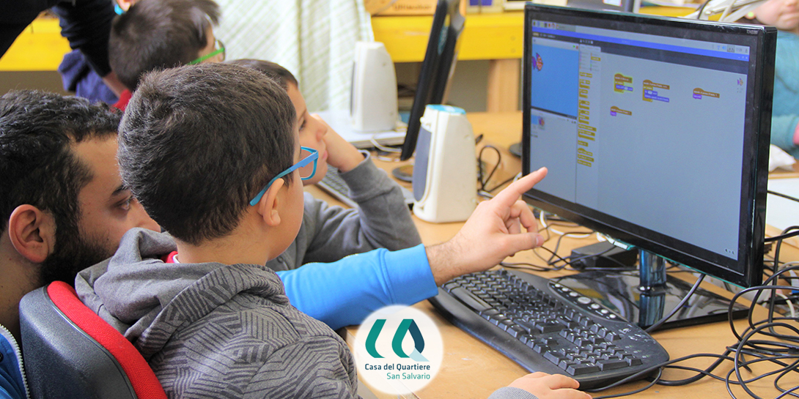

Obiettivi del percorso
Lezione 2 Creazione degli sprite e degli sfondi. Costumi e disegno al computer. Muovere un personaggio, associare un tasto a un comando
Lezione 3 Sistema cartesiano con coodinate X e Y. Risoluzione e pixel dell'area di lavoro
Lezione 4 Variabili e costanti. Secondi e millisecondi
Lezione 5 Le condizioni: se fai questo succede quello
Lezione 6 Personaggi e Oggetti: la gravità, interazioni tra sprite e cloni
Lezione 7 Punteggi e più storie. Strategie, livelli, vite, power up
Lezione 8 Messaggi broadcast e numeri random, imitiamo la natura
Lezione 9 Realizza il tuo Primo Videogioco!
Lezione 10 e infine Pubblica il tuo Primo Videogioco!
L’informazione non viene data in toto: è premura del docente costellare il percorso con tante piccole domande per saggiare la comprensione di quanto è stato spiegato. Nella parte finale dell'incontro viene dato di nuovo ampio spazio alla creatività individuale dei ragazzi, magari per proseguire il progetto finale, un videogioco o anche una storia.
VIDEOGIOCHI FAI DA TE
In questo percorso progetteremo e scriveremo il nostro primo videogioco. Non solo: una volta ultimato, lo rilasceremo online! Innanzitutto studieremo un’ambientazione e ne disegneremo i personaggi, li animeremo e li faremo interagire. Aiuteremo i ragazzi ad entrare in questo mondo apparentemente di difficile approccio attraverso software totalmente alla loro portata come Scratch. Un concreto approccio al PC che porterà i ragazzi a migliorare la gestione dei file, la ricerca online e anche l’utilizzo di tastiera e mouse.
Obiettivi del percorso
- Allenare il pensiero computazionale e creativo
- Trasformare problemi concreti in concetti astratti (matematici, logici o informatici)
- Imparare l'uso corretto di tastiera e mouse
- Affrontare vari argomenti: operatori logici - piano cartesiano - variabili e costanti
- Avvicinarsi alle basi del codice
- Imparare le basi della logica
- Pubblicare un videogioco online
Temi delle lezioni
Lezione 1 Ecco Scratch! Interfaccia e comandi, libere immagini e suoni, come salvare i file e non perdere il proprio lavoroLezione 2 Creazione degli sprite e degli sfondi. Costumi e disegno al computer. Muovere un personaggio, associare un tasto a un comando
Lezione 3 Sistema cartesiano con coodinate X e Y. Risoluzione e pixel dell'area di lavoro
Lezione 4 Variabili e costanti. Secondi e millisecondi
Lezione 5 Le condizioni: se fai questo succede quello
Lezione 6 Personaggi e Oggetti: la gravità, interazioni tra sprite e cloni
Lezione 7 Punteggi e più storie. Strategie, livelli, vite, power up
Lezione 8 Messaggi broadcast e numeri random, imitiamo la natura
Lezione 9 Realizza il tuo Primo Videogioco!
Lezione 10 e infine Pubblica il tuo Primo Videogioco!
Formato della lezione:
Venerdì pomeriggio, i ragazzi arrivano dopo una settimana di scuola e di tante informazioni. Proprio come in un’attività sportiva, il primo quarto d’ora sarà dedicato agli esercizi di riscaldamento: un modo per concentrarsi e per acquisire famigliarità con i due dispositivi di interazione con il PC - tastiera e mouse - in modo coerente e produttivo. Useremo diversi strumenti semplici e interattivi, come gli esercizi di Mouse Accuracy e Typing Club, per aiutare i ragazzi a migliorare ogni volta. Dopo il riscaldamento, il tutor introduce il tema della giornata e si entra nel vivo delle attività.L’informazione non viene data in toto: è premura del docente costellare il percorso con tante piccole domande per saggiare la comprensione di quanto è stato spiegato. Nella parte finale dell'incontro viene dato di nuovo ampio spazio alla creatività individuale dei ragazzi, magari per proseguire il progetto finale, un videogioco o anche una storia.
9-11 anni
10 POMERIGGI
da 2 ORE
QUANDO: Ogni venerdì dalle 17.30 alle 19.00, dal 12 ottobre al 21 dicembre
DOVE: Alla casa del quartiere di SanSalvario